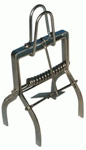

Professionele mollenbestrijding
Last van mollen?
Wij maken en houden uw gazon of grasland molvrij met de Yankee-klem.

Onze werkwijze
De Yankee-klem
Om uw gazon of grasland molvrij te maken of te houden, gebruiken wij de Yankee-klem, de meest effectieve mollenklem. We plaatsen de klemmen zorgvuldig in de gangen die de mol heeft gegraven.
Wanneer de mol door de gang loopt, klapt de klem direct dicht, waardoor de mol op slag dood is. Bij Mollenoverlast werken we uitsluitend met deze methode, omdat die doeltreffend en zo humaan mogelijk is.
Zo biedt Mollenoverlast u altijd een échte oplossing!
Lees meer over mollen